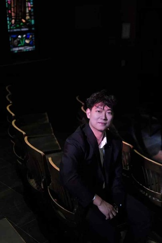

基本信息
1-page Resume (Encouraged，PDF格式，中英文均可)
Portfolio or Additional Files (Optional，PDF或视频)
请把文件名命为：first name_Last name_netid
请上传一张自己的照片，普通的生活照就可以！（只是为了面试的时候我们可以把你认出来）

查看原图
查看原图
通用问题部分
为什么想要加入CSSA？
在第一年刚来的时候就已经听说了CSSA，而每年在举办各种各样的活动中（跨年晚会，歌手大赛，新生包机等）真真切切的感受到了CSSA带给大家的帮助和随之诞生的在异国他乡的亲切感和归属感。在毕业之前，特别希望不留遗憾，可以有机会成为一份子，为我们华人群体作出贡献，也帮助CSSA和Cornell更好地发展。
你心目中CSSA是个什么样的组织？
我认为CSSA作为把Cornell华人群体凝聚起来的一个组织，承载着十分重要的作用。它使得在异国他乡的留学生群体能够结识新的朋友，相互团结起来。同时，每年CSSA提供的各种信息也能帮助新生们更好的适应美国的留学生活。最后，每年举办的各种活动也可以让大家得意宣传和发扬我们的传统文化。
加入CSSA之后，你最想在康奈尔校园内实现的事情是什么？
我希望可以做的事情是和毕业的校友们建立联系。在过去的几年里，有很多次毕业的校友联系到过我。也是在那个时候我意识到校友群体有很强大的凝聚力，同时他们非常希望可以回馈学校或者帮助在读同学们，但找不到靠谱合适的渠道。我认为这是一股非常强大的凝聚力，包括且不限于：捐赠，联谊，实习，找工作，经验介绍等一系列。
秘书处
如果让你选择未来一周的工作，你想做什么？
写一封让新生感到温暖的欢迎邮件
当别人第一次见到你时，他们会说“哇，你居然___！”（请填空）
这么有活力哈哈
某天深夜，一位新生在微信上非常焦急地询问：‘我的航班延误了了，接机联系不上怎么办？现在半夜一个人在机场好害怕...’
作为小助手值班的你，会如何回复？请写出具体回应（注意：你无法直接解决问题，但需要让TA感到安心）。
请放宽心！这种情况我自己之前也有经历过，首先你先找到一个较为安全的地方耐心的等待，确保你的手机电量充足。如果你感到害怕，你可以随时联系我（条件允许的情况下，我会把我自己的个人联系方式发给这位需要帮助的同学）。然后我这边会积极的帮你去联系几位常见的接机司机，看可不可以帮你一起拼车回来。如果你有任何问题，随时可以DM我！
你希望从秘书处的伙伴们和这份工作中获得什么？（比如：深厚的友谊？一份完美的简历？超硬核的技能？还是单纯的快乐？）
我自己认为我是一个能从帮助他人的事情上获取快乐和能量的一个人。所以我一方面希望可以结识更多的新朋友，另一方面也希望可以为CSSA更好的维系和运转提供自己的一份力量。能够在他人有需要的时候给他们提供帮忙！（真的会感受到快乐）
（可选）有人说“我们属于我们投入过心力的地方”。你希望自己在秘书处留下怎样的痕迹？
我希望可以把我的快乐和积极向上的态度传递给身边的每一个人，也希望有更多的同学们能够记住CSSA有秘书部的存在，并且能够感受到秘书部带给他们的帮助和温暖。
（可选） 秘书处传统：每次团建都要尝试一个奇奇怪怪的新活动。你有什么离谱但有趣的idea吗？（多奇怪都行）
一直很心心念念Ithaca有一个Cayuga Lake Explore的项目，好像是晚上坐船去湖中间看天上的月亮和星星。感觉会是一个非常有氛围能让人记忆深刻的团建！
第一志愿为什么选择这个部门？
在决定报名之前，我仔细阅读了每一个部门的职责。因为我自己是一个纯纯J人，感觉秘书部的很多工作都是非常符合我喜欢的工作方式。同时，我很希望可以帮助到他人，为他们提供一些经验和信息，帮助大家更好的适应大学生活。感觉这些都是秘书部一直在努力的方向。
内联部
第二志愿为什么选择这个部门？
自己是一个顶尖E人，很喜欢跟大家沟通和交流，同时自己又很喜欢组织和参加各种各样的活动，会认为内联部是一个适合我发挥天性的地方。自己之前也有许多内联的经验，所以第二志愿会选择这里！
是否接受部门调剂？
是